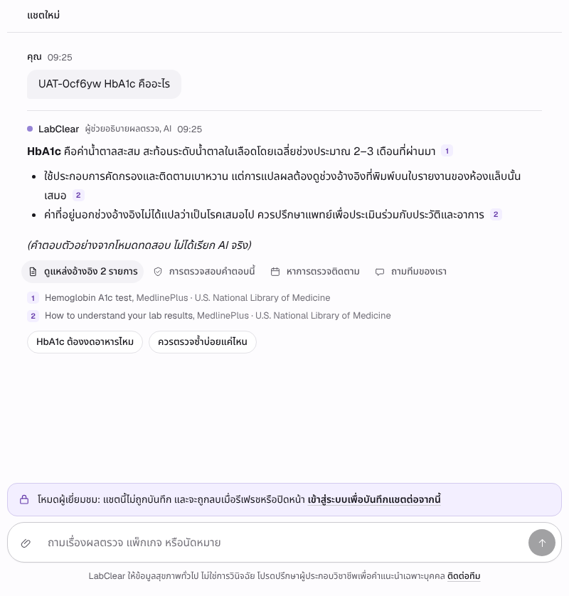
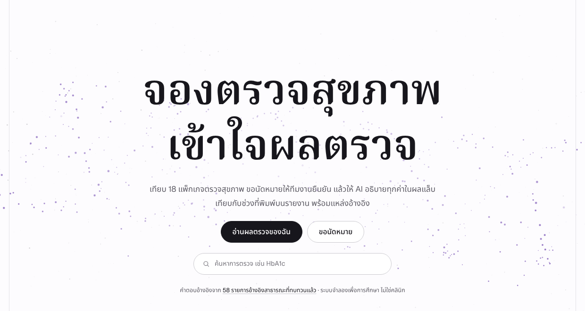
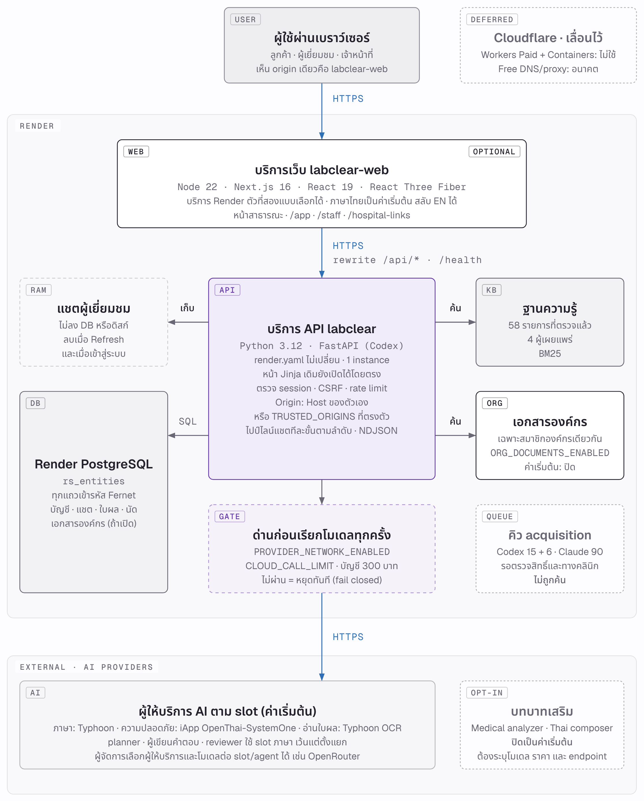
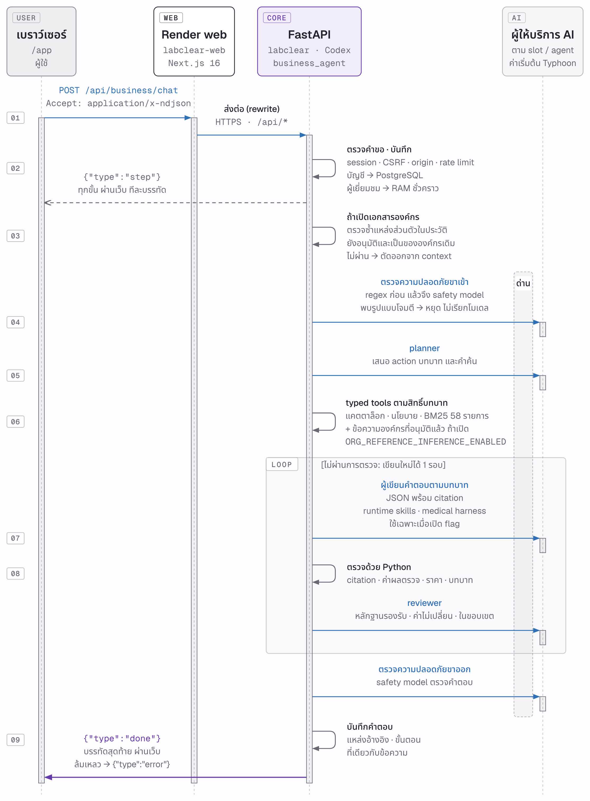
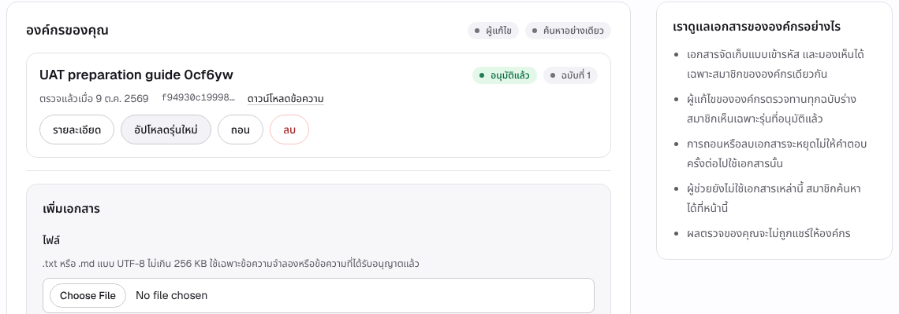

แชตบอตภาษาไทยของคลินิกตรวจสุขภาพจำลอง รุ่นรวมนี้ใช้ backend ของ Codex กับหน้าเว็บภาษาไทยของ Claude เพื่อตอบความเห็น CEO 5 ข้อ ยังเป็น candidate สำหรับตรวจรับ
| ช่วงเวลา | คำถามที่ได้ยินทุกวัน |
|---|---|
| ก่อนตรวจ | มีงบ 1,500 บาท ควรเลือกแพ็กเกจไหน |
| นัดหมาย | ศูนย์ไหนว่าง ต้องงดอาหารไหม เลื่อนนัดได้ไหม |
| ได้ผลแล้ว | HbA1c บนใบผลบอกอะไร ค่าไหนอยู่นอกช่วง |
ราคา ศูนย์บริการ การชำระเงิน และใบผลทั้งหมดเป็นข้อมูลสมมติ ระบบให้ข้อมูลทั่วไป ไม่วินิจฉัยโรค

แชตผู้เยี่ยมชมบนเว็บรุ่นรวม · ภาพจาก web UAT คำตอบมาจาก AI จำลอง
| ข้อ | CEO บอกว่า | รุ่นรวมทำ |
|---|---|---|
| 1 | แหล่งอ้างอิงน้อยและเจาะจงบางโรงพยาบาล อยากให้ลูกค้าองค์กรอัปโหลดเอกสารเอง | ฐานที่ค้นคง 58 รายการที่ตรวจแล้ว แหล่งใหม่ 111 รายการรอตรวจ เอกสารองค์กรแบบ Codex และหน้าลิงก์โรงพยาบาล |
| 2 | ไม่ได้เข้าสู่ระบบ ประวัติแชตหายเมื่อรีเฟรช | คงการลบเพื่อความเป็นส่วนตัว เข้าสู่ระบบแล้วแชตผู้เยี่ยมชมก็ถูกลบ (กฎ Codex) |
| 3 | ย้ายจาก Render ไป Cloudflare บนโดเมนที่ซื้อไว้ | เจ้าของเลือกกลับมาใช้ Render เดิม · Cloudflare เก็บเป็นทางเลือก |
| 4 | ใช้ OpenRouter key ของทีม โมเดลถูก ดี เร็ว งบ USD 10 | เลือกผู้ให้บริการต่อขั้นได้ (มี OpenRouter) บทบาทใหม่ปิดไว้ เพดาน 300 บาท |
| 5 | เว็บเน้นภาษาไทย ใช้ Next/React/Three ให้เด่นและเข้าใจง่าย | เว็บ Next.js ของ Claude ภาษาไทยเป็นค่าเริ่มต้น ปรับให้เข้ากับ API ของ Codex |
รุ่นรวม = backend, ความปลอดภัย และสัญญา API ของ Codex main + หน้าเว็บของ Claude branch · ความสามารถใหม่ของ Codex 6 ส่วนปิดเป็นค่าเริ่มต้น

i18n:checklabclear (API)FastAPI ของ Codex ใช้ render.yaml เดิม 1 instance หน้า Jinja เดิมยังเปิดได้labclear-web (เลือกได้)Next.js rewrite /api ไปที่ API · API รับ origin ของเว็บผ่าน TRUSTED_ORIGINS แบบตรงตัว

| ขั้น | ค่าเริ่มต้น (เปลี่ยนได้ที่ /staff) |
|---|---|
| โมเดลภาษา (planner ผู้เขียน reviewer) | Typhoon v2.5 30B |
| Safety check | iApp OpenThai-SystemOne |
| อ่านใบผล | Typhoon OCR |
| Medical analyzer · Thai composer | ปิด · ต้องระบุโมเดล ราคาที่ตรวจแล้ว และ endpoint |
เพดานงบรวมของโครงการ
ประเมินจริงในวง USD 1 เมื่อเจ้าของอนุมัติ
รอบ rc2 ทดสอบแบบ free-first: Typhoon text/OCR + OpenThai-SystemOne เป็น baseline · OpenRouter และ embedding พักไว้ (โค้ดยังอยู่) · ชุดโมเดลเร็วของ Claude branch ยังไม่ได้วัด จึงไม่เป็นค่าเริ่มต้น
| เมื่อผู้เยี่ยมชม… | แชตและภาพที่แนบ |
|---|---|
| รีเฟรช หรือปิดแท็บ | ลบบนเซิร์ฟเวอร์ทันที (beacon) |
| กดย้อนกลับมาหน้าเดิม | หน้าโหลดใหม่ ไม่เห็นแชตเก่า |
| เข้าสู่ระบบ หรือสมัครบัญชี | ลบ หน้าจอล้างทันที บัญชีเริ่มแชตใหม่ |
| มีคำตอบเก่าของผู้เยี่ยมชมมาถึงช้า | ถูกทิ้ง ไม่แสดงทับบัญชีใหม่ |
| ไม่ใช้งาน 20 นาที | ลบ |

หน้าองค์กรของฉันของผู้แก้ไข · ภาพจาก UAT R4-05 (เอกสารจำลอง)
ORG_DOCUMENTS_ENABLED · ปิดเป็นค่าเริ่มต้นORG_REFERENCE_INFERENCE_ENABLED และผู้ให้บริการผ่านการตั้งค่าแล้วknowledge/acquisition/ สถานะ NOT_APPROVEDrender.yaml ไม่เปลี่ยน flag ใหม่ยังปิดweb · npm run start:renderAPI_ORIGIN ที่เว็บ · TRUSTED_ORIGINS ที่ API/health ตอบ 4.0.0-rc2 และ commit ที่ deployTRUSTED_ORIGINS ไม่ตรง)| Render: API และเว็บ (แผนฟรี) | 0 |
| Render PostgreSQL ฟรี (หมดอายุ 30 วัน) | 0 |
| ผู้ให้บริการ AI | ภายใน 300 บาท |
| Cloudflare Workers Paid | ไม่ใช้ (เลื่อนไว้) |
หน้าเว็บภาษาไทยบน backend ที่ตรวจความปลอดภัยแล้ว ลบแชตผู้เยี่ยมชมเมื่อรีเฟรชหรือเข้าสู่ระบบ รันบน Render และหยุดเรียก AI ที่ 300 บาท